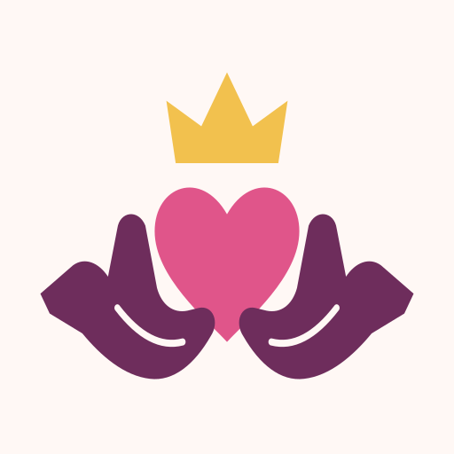

Dicht bij elkaar
Merk, beeldtaal en het eerste Claddagh-teken.
Warm, persoonlijk.
Met een eigen teken.
De handen dragen het hart. De kroon maakt de belofte compleet. Een verfijning van de gekozen richting, met ruimte voor speelsheid.
Een klein moment. Meer van elkaar.
Vriendschap. Liefde. Trouw.
Open handpalmen, een zacht hart en een eenvoudige kroon. Minder kleine details, meer herkenning.

App-icoon
Rust in de dagelijkse kern
Duidelijke stappen, meer witruimte en één primaire uitnodiging per kaart.
Een eigen nachtgevoel
After Dark blijft warm en speels. Met privacy zichtbaar in woord en vorm.
Gewoon te bouwen
Lato, vlakke kleuren en SVG. Geschikt voor de bestaande app.
Tom & Annelieke
Een klein moment. Meer van elkaar.
✓ Samen ingecheckt · ♥ Gebaar opgemerkt
Een lege dag is gewoon een lege dag.
Vandaag voor jullie
2 tot 5 minutenHoe gaat het met je?
Annelieke ziet je antwoorden pas als jullie allebei hebben ingecheckt.
Iets voor Annelieke
Kies één klein gebaar. Je keuze blijft een verrassing.
Gesprek van de dag
Zomaar iets liefs sturen
Meer samen
390 × 844 · Scroll in het scherm · Voorbeeldgegevens
Hoe gaat het
met je, Tom?
Annelieke ziet je antwoorden pas als jullie allebei hebben ingevuld.
Hoe voel jij je vandaag?
Hoeveel energie heb je?
Waar heb je behoefte aan?
390 × 844 · Scroll in het scherm · Voorbeeldgegevens
Alleen voor
jullie twee.
Een beetje spanning, op jullie manier. Gesprekken, wensen en jullie eigen humor.
Welke sfeer past bij jou?
De mildste van jullie twee keuzes geldt. Je kunt dit altijd aanpassen.
Staat aan voor jou
Jouw sfeer: Flirterig. Je ziet niet of je partner After Dark al heeft aangezet. Jullie kunnen ieder je eigen keuze maken.
Alleen wat jullie samen willen.
390 × 844 · Scroll in het scherm · Voorbeeldgegevens
Alleen voor
jullie twee.
Sfeer: Flirterig
De mildste van jullie twee keuzes.
Hoeveel zin heb je vandaag?
Je deelt je gevoel. Geen verwachting.
Jij: veel zin. Aanpassen mag altijd.
Jullie hebben vandaag
allebei veel zin
Misschien een moment voor jullie twee?
Een vonk zegt: ik denk aan je. Ja, later of liever een knuffel zijn allemaal goed.
Annelieke denkt aan je.
Kies wat voor jou goed voelt.
Jouw keuze
Wijzig je sfeer of zet After Dark uit. Als één van jullie het uitzet, gaat het voor jullie allebei dicht.
390 × 844 · Scroll in het scherm · Voorbeeldgegevens
Eén handschrift.
Elke plek een eigen teken.
Een familie van ronde lijniconen voor de dagelijkse plekken, kleine gebaren en After Dark. Geleverd als losse SVG-bestanden.
24 × 24 als basis, lijndikte 1,7 en afgeronde uiteinden. Plekken gebruiken 26 px, navigatie 21 tot 24 px. Elk interactief icoon krijgt een raakvlak van minimaal 44 × 44 px en een tekstlabel of toegankelijke naam.